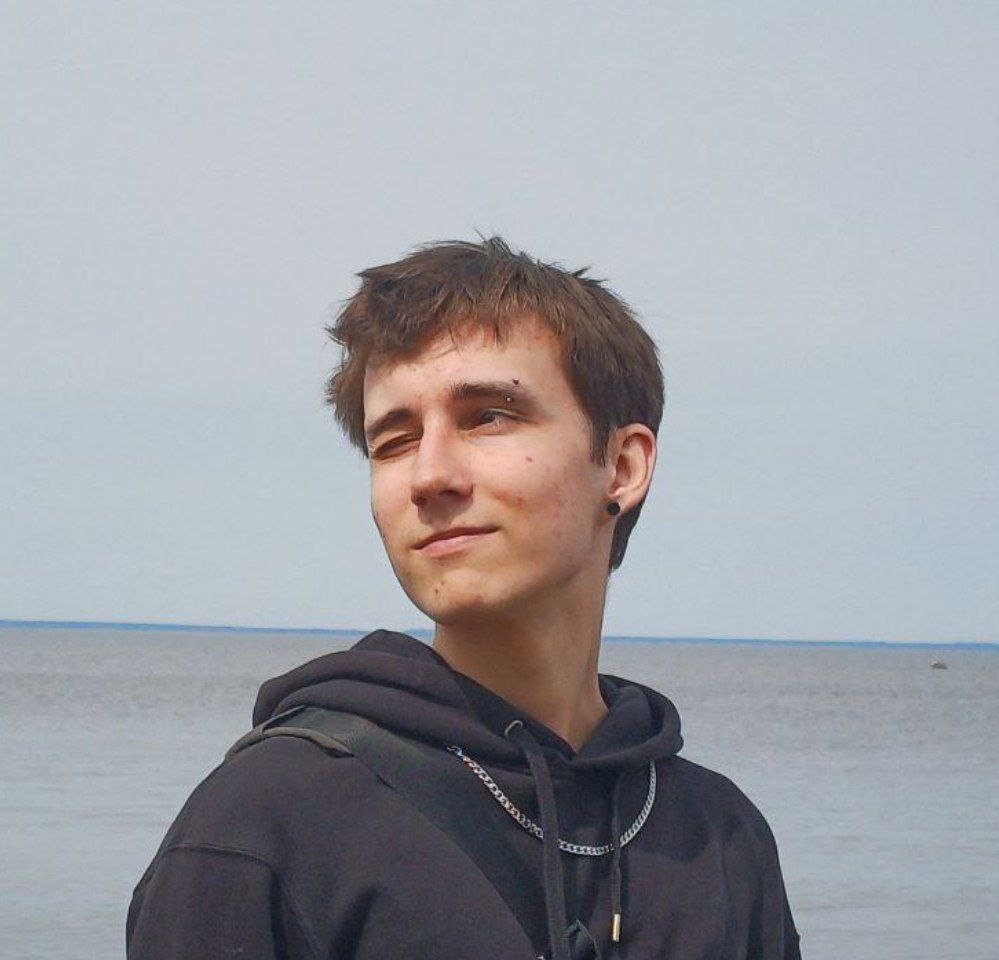

> phone: +79174235405
> telegram: @krakik
> discord: krakik9737 (Krakik(@Krakikk))
Hello, i'm Kirill, desingner, artist and fron-end developer. My target has always been improving myself and learn something new everyday and doing smarter not harder. My strong side is that I've been making things prettyer my whole life through drawings, designs and cites. I know color theory, composition rules etc. by heart. Thou my programmer expirience not much big, I`m up to lern new thigs.
HTML, Python, JS
Git
Java Script:
function multiply(a, b){
return a * b
}
My [GitHub project](https://github.com/Krakikk/rsschool-cv)
HTML course [(YouTube)](https://www.youtube.com/watch?v=_R5a-Kc0pRc&list=PLDyJYA6aTY1nlkG0gBj96XDmDSC4Fy1TO)
RS School [JS/Front-end RU Course] (https://rs.school/courses/javascript-ru)
Cource of Programming and algoritmization at [USPTU](https://rusoil.net/?ysclid=mcuaha1jl2230234213)
English: B2, had language practice at USPTU, curricular included english classes, such as Phisics, chemistry, programming etc.
Russian: C2